fru-lab 使用指南
fru-lab 是一個以圖形介面操作的 5G 部署模擬器。它能幫你在一台機器上架起完整的 5G 核網（free5GC），並模擬基地台和手機，全部在瀏覽器裡點選完成。這份指南從零開始，一步一步帶你操作。
00認識 fru-lab
fru-lab 是你在瀏覽器裡看到的操作台：它透過這台機器的 Docker，把 free5GC、gNB 和 UE 都部署成容器。下圖是它們之間的關係。
在 fru-lab 這台機器上，用 Docker 部署 free5GC、gNB，以及每個 Subscriber 各一個 UE 容器。適合學 5G、驗證功能、開 UE 的 terminal 去 ping。
01名詞小抄
只需要記住這幾個詞，就看得懂這份指南和操作台上的大部分字。
02安裝與啟動
挑一種方式。第一次用建議 Docker Compose：一個指令起 fru-lab。
Docker Compose 建議
git clone https://github.com/free-ran-ue/fru-lab.git cd fru-lab/docker docker compose up -d
打開 http://<主機 IP>:8888。帳密在 docker/config.yaml，預設 admin／frulab。停止用 docker compose down。
開發模式（從原始碼）
make # backend、frontend make run # fru-lab，:8888，讀 config.yaml
部署 free5GC、gNB、UE 需要這台機器有 Docker，且執行 fru-lab 的使用者能存取 Docker daemon。
Kubernetes（Helm）安裝 工程
chart 在 helm/，fru-lab 是一個 Deployment，用 NodePort 30888。它透過 node 上的 Docker socket 部署 free5GC、gNB、UE，所以要開啟 frulab.docker.enabled，並填 node 的 IP。
cd helm helm install frulab . -f my-values.yaml
# my-values.yaml：最少要改的 frulab: docker: enabled: true webconsoleHost: 192.168.1.10 # node 的 IP nodeSelector: kubernetes.io/hostname: my-node # 有 Docker 的那台 node
- 資料保存：預設 hostPath（
/var/lib/frulab/db），也可以改pvc或emptyDir。 - 完整選項見
helm/values.yaml與helm/README.md。
Docker Compose 的細節 工程
- fru-lab 容器透過掛進來的 host Docker socket 部署 free5GC、gNB、UE。
deploy.workDir在 host 和容器裡必須是同一個路徑（見docker-compose.yaml該 volume 的註解），因為 fru-lab 會把這個路徑交給 host 的 Docker daemon。 - 資料：fru-lab 的資料庫在
/var/lib/frulab/db、部署狀態在/var/lib/frulab/deploy。image 用make docker建。
基本操作：在 fru-lab 上架一套 5G 網路
照這一章做完，你會有一套跑著的 free5GC、一個 gNB 和幾支上線的 UE，並能進 UE 的 terminal 看它真的能上網。
A1登入與畫面導覽
用 config.yaml 裡的帳號登入，預設 admin／frulab。每一頁都是同樣的框架：
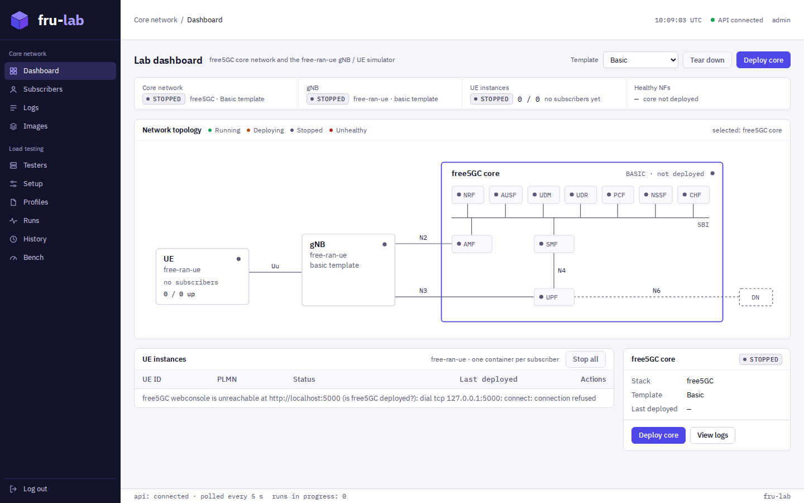
1 2 3- 1Core network：Dashboard、Subscribers、Logs、Images，本章用到的頁面。
- 2右上角：UTC 時間、API 狀態（
API connected或API not answering）、登入的使用者。 - 3底下的狀態列：API 狀態。左下角是 Log out。
A2部署核網
- 選一個 Template
核網停著時，Dashboard 右上角有 Template 選單。第一次用選 Basic。
Basic
一個 UPF。最簡單。
ULCL
資料面拆成中繼 UPF 和錨點 UPF，以 N9 串起來。
ULCL (Two Slice)
兩條 ULCL，各自有 SMF、I-UPF、PSA-UPF，一個切片一條。
- 按 Deploy core
在頁首右邊（或選取核網時，右下 Selected node 面板）。狀態會從 Deploying 變成 Running。部署失敗或超過
deploy.timeout（預設 5 分鐘）會自動撤掉。1 2 3 4 5- 1Template 選單
- 2Deploy core；旁邊的 Tear down 一次停掉全部
- 3Network topology：點 UE、gNB、核網框或單一個 NF 來選取它。圓點顏色是狀態：Running、Deploying、Stopped、Unhealthy
- 4UE instances：每個 Subscriber 一列
- 5Selected node：選取的東西的詳細資料與操作按鈕
- 確認核網跑起來
上方狀態列的 Healthy NFs 會顯示幾個 NF 正常。點拓撲圖上的單一個 NF（例如 AMF）可以只看它。
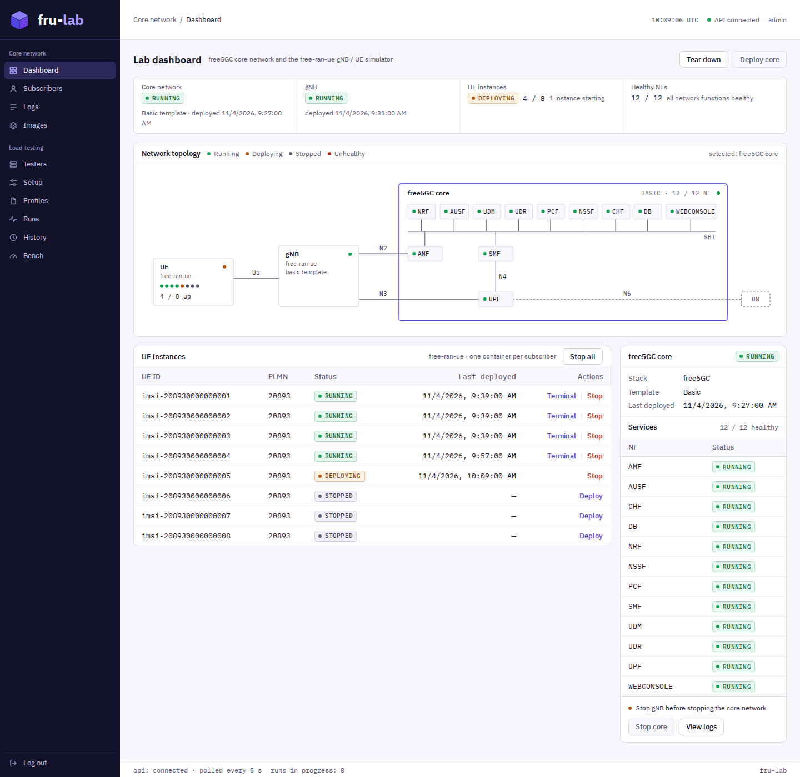
Basic 跑起來之後，拓撲上每個 NF 都是綠點，Template 名稱標在核網框右上角。
A3部署順序：核網 → gNB → UE
fru-lab 會擋住順序不對的操作。記住一句話就好：先開的後關。
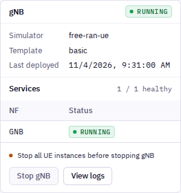
Stop all UE instances before stopping gNB。會看到的提示
Deploy the core network before deploying gNBDeploy gNB before deploying a UE instanceStop gNB before stopping the core network
任何沒完全停下的東西都能 Stop，包括卡在 Deploying 的部署。
A4加入 Subscribers
Subscriber 存在 free5GC 的 webconsole 裡，所以要先部署核網。打開側邊欄的 Subscribers。
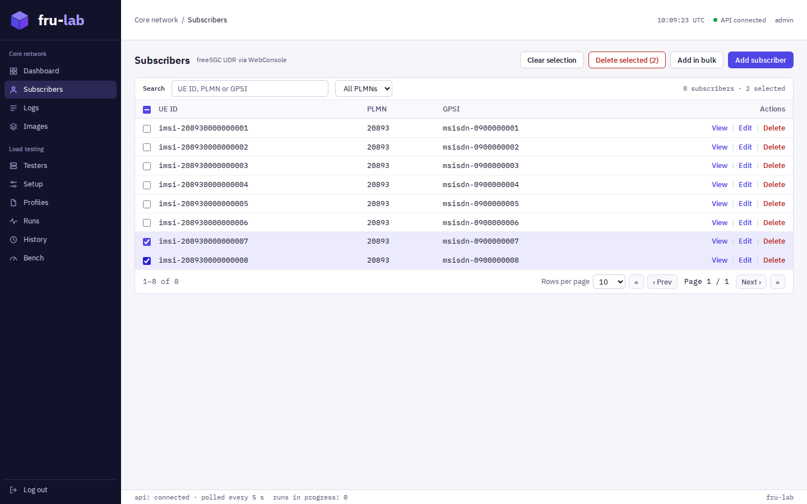
- 一次加很多個：Add in bulk
輸入要建幾個（1–10 000），按 Continue。
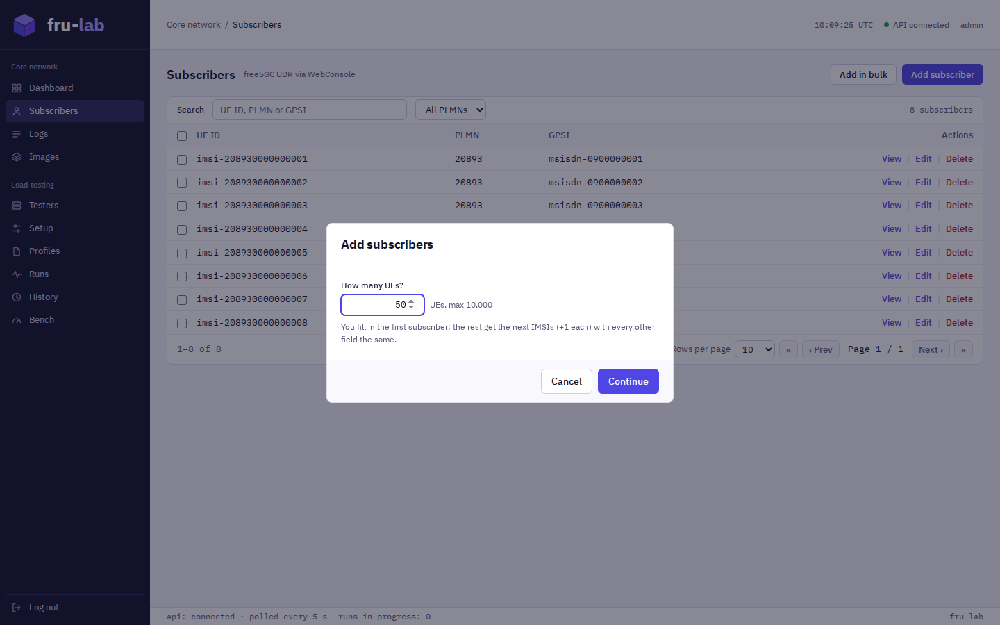
- 填第一個，其餘自動遞增
你只填第一個 Subscriber；其他的 IMSI 逐一加 1，其餘欄位都一樣。SUPI 下方會寫出整批的範圍，按鈕變成 Create N。建立失敗的會列在表單最下面。
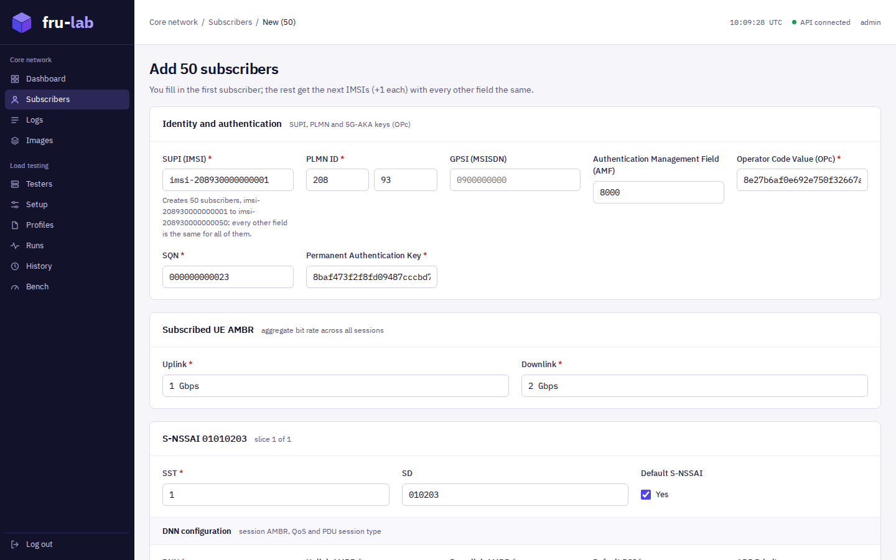
- 只加一個：Add subscriber
空白表單：身分與金鑰（SUPI、PLMN ID、GPSI、AMF、OPc、SQN、permanent key）、Subscribed UE AMBR，以及一或多個 S-NSSAI 和它的 DNN 設定。用 + S-NSSAI、+ UP security、+ Flow rule 再加，按 Create 存。
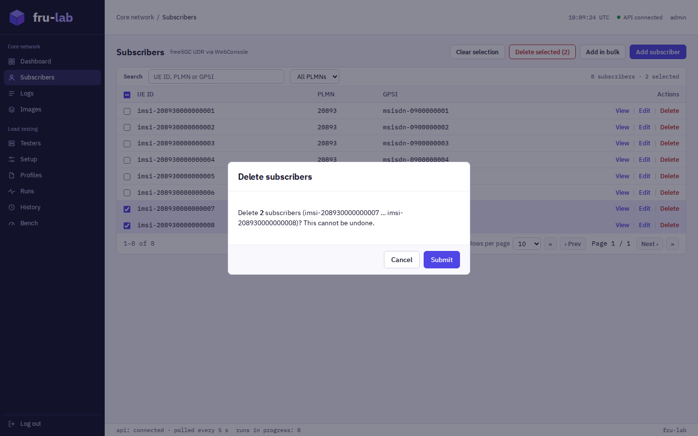
在 ULCL (Two Slice) 下，Subscriber 的 S-NSSAI SD（010203 或 112233）決定它的 UE 接到哪個切片的 gNB。
A5gNB、UE 與 Terminal
- 部署 gNB
點拓撲圖上的 gNB，在 Selected node 面板按 Deploy gNB。Two Slice 下還是一個 gNB 節點、一個按鈕，但會起兩個 gNB 容器，一個切片一個。
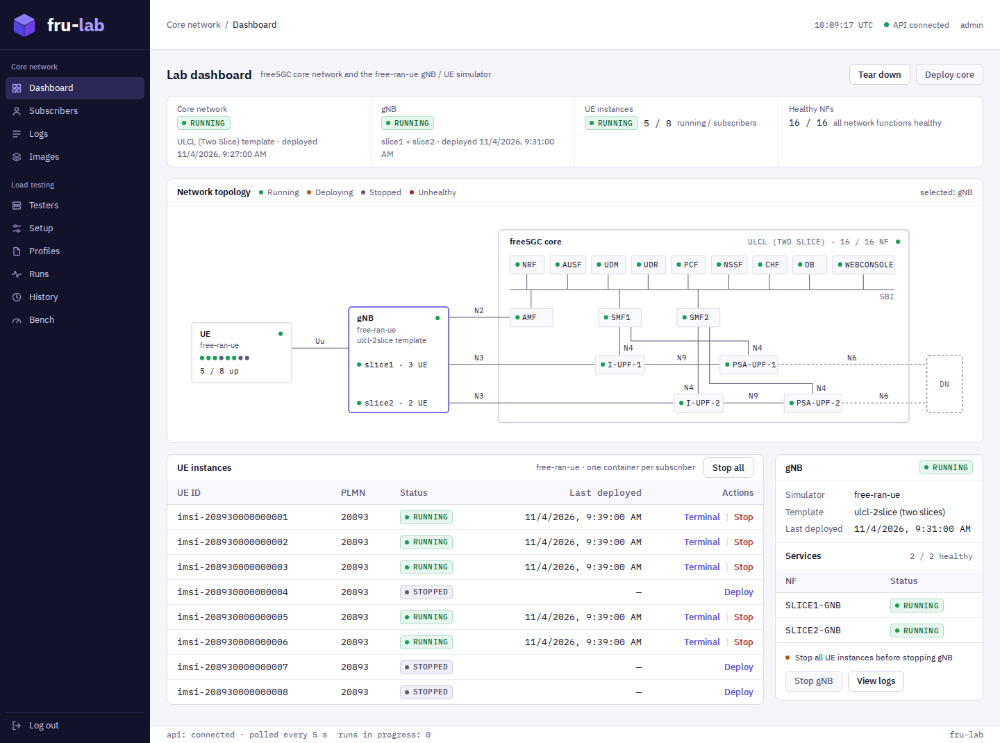
Two Slice：gNB 框列出兩個切片各有幾個 UE 上線，Services 表有 SLICE1-GNB、SLICE2-GNB。 - 部署 UE
UE instances 面板列出每個 Subscriber。每列的 Deploy 起那支 UE（一個 free-ran-ue 容器），Stop 停掉；Stop all 停掉全部。點 UE ID 選取它，右邊面板顯示 PLMN、GPSI、最後部署時間與操作按鈕。
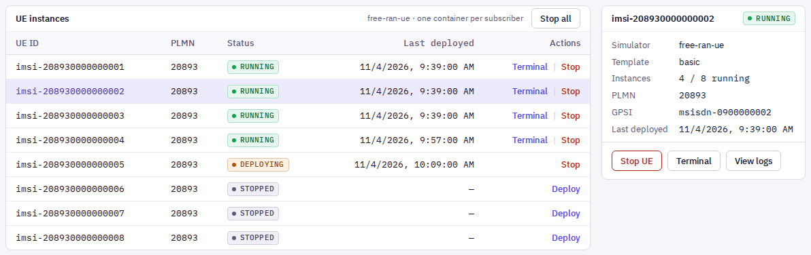
- 進 UE 的 Terminal 試上網
跑著的 UE 會出現 Terminal。打開後就在那支 UE 的容器裡，可以用它的隧道介面 ping 外面，確認整條路通了。右上角 ✕ 關閉。
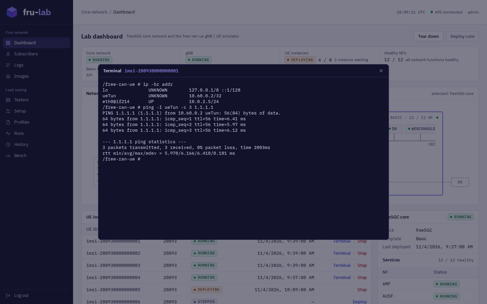
A6Logs 與 Images
Logs
- 左邊 Sources：free5GC 核網、gNB（Two Slice 時分 Slice 1、Slice 2），以及部署過的每支 UE。圓點是狀態。
- 選核網時可以看 All NFs 或單一個 NF。
- Log 是快照：按 Refresh 重抓，Download 存成
.txt。 - Dashboard 上的 View logs 直接跳到選取節點的 log。
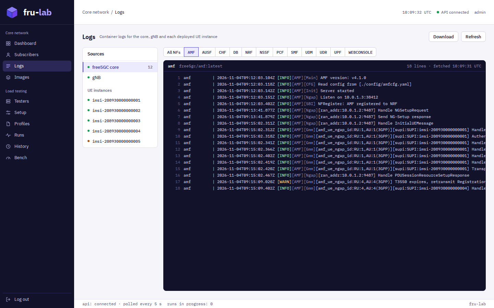
Images
- 列出 fru-lab 會用的 Docker image：free5GC 各 NF、MongoDB、webconsole，以及 gNB 和 UE 共用的 free-ran-ue。每個固定在 compose 範本用的 tag（通常
latest）。 - Pull／Update 抓那個 tag；Pull missing (N) 依序抓所有缺的。
- Clear 刪掉本機的 image，下次部署會重抓；Clear all 一次全刪。都會先確認，按 Submit 才執行。
- 容器還在用的 image 刪不掉，要先停核網、gNB 或 UE。
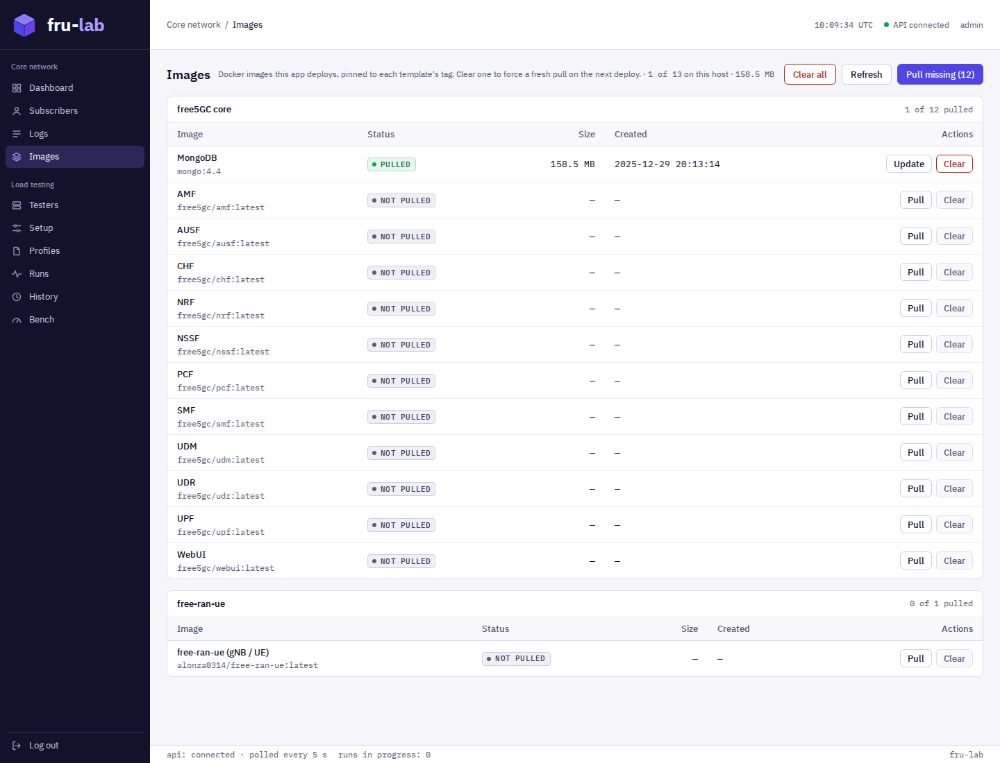